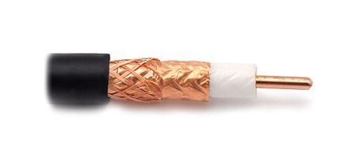

Il cavo coassiale
Il cavo coassiale è un tipo di cavo di trasmissione che utilizza un conduttore centrale in rame isolato, circondato da un conduttore esterno cilindrico in metallo che funge da schermo elettrico. Questo schermo serve a proteggere il segnale trasmesso dal rumore e dalle interferenze esterne. Il cavo coassiale è stato uno dei primi tipi di cavo utilizzati per la trasmissione di segnali di televisione a lunga distanza. Attualmente viene utilizzato per una vasta gamma di applicazioni, come ad esempio nelle reti di comunicazione e nella trasmissione di segnali di video sorveglianza.
